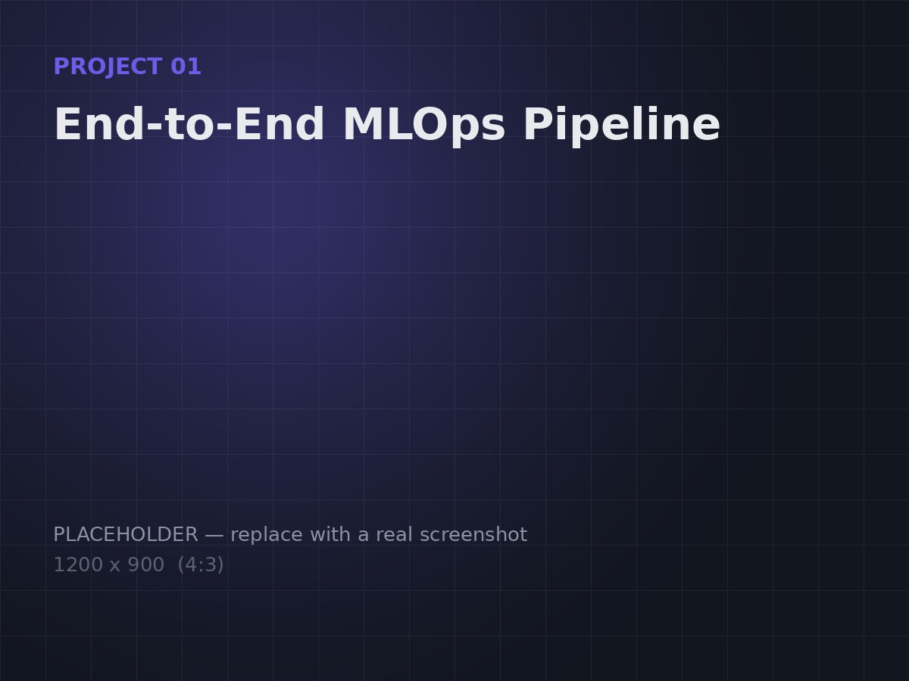
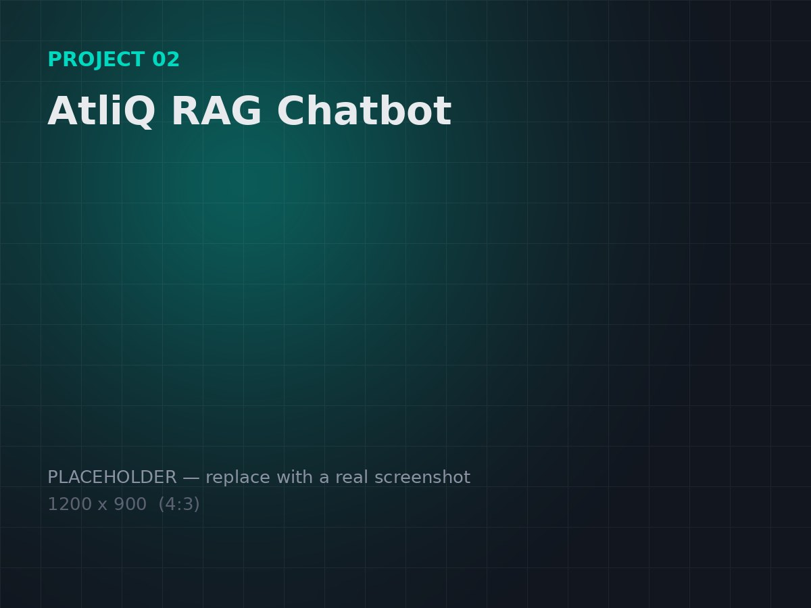
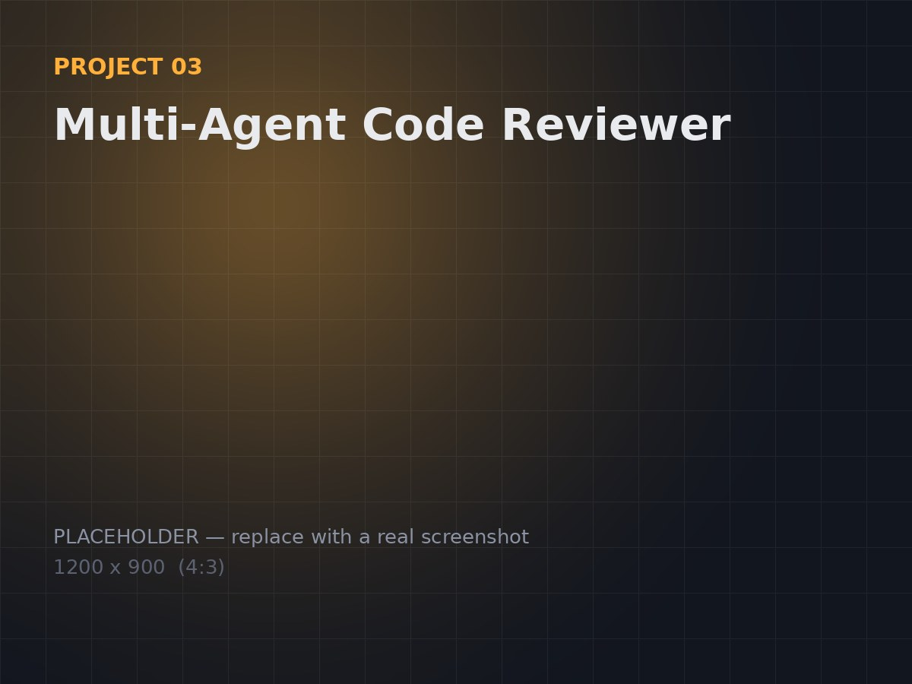

Hi, I'm Akein Tsung, an AI undergraduate at UTS.
AI student at the University of Technology Sydney, focused on building complete machine learning systems that run from data pipelines and model training through to deployed APIs and multi-agent applications.

I'm Akein Tsung, a Bachelor of Artificial Intelligence student at the University of Technology Sydney. I'm less interested in models that work in a notebook and more interested in systems that work end-to-end, covering the data pipeline, the training run, the API, and everything else that has to hold together for a model to actually be useful to someone.
That mindset carried over from my Diploma of Information Technology at UTS College, where I graduated with a 6.6/7.0 GPA and received the Gold Medal for Academic Excellence. Consistency and attention to detail matter to me as much as ambition does.
Currently exploring: retrieval-augmented generation, multi-agent LLM systems, and production-grade MLOps.
Selected work
A few things I've built, with what they actually involved.

GITHUB REPOSITORYEnd-to-End MLOps Pipeline
A full machine learning pipeline for real estate price prediction. It runs from raw data ingestion through PostgreSQL and Pandas, to model training with MLflow experiment tracking, to a containerised FastAPI service that serves live predictions.

GITHUB REPOSITORYAtliQ RAG Chatbot
An internal AI assistant built for enterprise use, combining retrieval-augmented generation with role-based access control, automatic PII redaction, and defences against prompt injection. Evaluated with Ragas, achieving perfect faithfulness and context recall scores.

GITHUB REPOSITORYMulti-Agent Code Reviewer
A stateful, multi-agent orchestration pipeline built with LangGraph. Uses a fan-out/fan-in architecture to run parallel, specialised LLM reviewers for security, performance, and style against GitHub pull requests, then merges their findings into a single structured review.
Roles I've held
Internships, jobs, and other work in order.
Peer Networker
Helping new and commencing students settle into university life, connecting them with peers, staff, and campus resources through structured networking activities.
Outgoing Global Volunteer (oGV) Team Member
Supporting AIESEC's outgoing global volunteer program by helping students find and prepare for international volunteering placements. Running candidate outreach and application screening, guiding applicants through the matching process, and contributing to recruitment campaigns and partner engagement.
What I've studied
Degree, standout units, and results worth naming.
Bachelor of Artificial Intelligence
Currently undertaking coursework spanning applied machine learning, data mining, mathematics, and engineering.
Diploma of Information Technology
Graduated with a 6.6/7.0 GPA and received the Gold Medal for Academic Excellence.
Edexcel International A Levels
Achieved 1 A* and 2 A grades.
What I work with
Grouped by how I actually use them, not a wall of logos.
Machine Learning
Building products
Analysis & tools
Ways of working
Let's talk about what you're building.
Open to internships, graduate roles, and interesting problems in general.
Email me →Akein Tsung
Bachelor of Artificial Intelligence @ UTS
Building end-to-end ML systems that span data pipelines and MLOps through to retrieval-augmented generation and multi-agent applications.